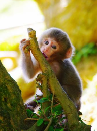

“I don’t remember much about India,” Mum tells me, taking a sip from her mug as she pats the Mia, the small cat that is owned by my uncle, who now resides in this old house.
“I was so young when we came, so the memories of my childhood there are blurry.”
As she begins to stare out into the distance, still patting the cat, who is beginning to hum a soft purr, she glances in my direction.
“There’s a few though, they’re as clear as day.”
“Well, tell me those ones.” I push, leaning forward in my chair.
She nods, and then her gaze draws back towards the distance.
“It was always hot in India. Like the humidity levels were ridiculous at times, as you could expect. I remember one day, pretty clearly actually, playing the garden with my brother…well, your uncle Kevin.” She tells me, slightly grinning.
“I remember, we were playing with this small tennis ball, just throwing it back and forth. All of a sudden, this monkey comes bursting out of the trees near our garden. Small little thing, but god, it was lightening. Kevin was so surprised he dropped it, and the monkey picked it up and scampered back up the tree.”
“We tried to get it back, but the monkey wouldn’t budge from his tree. He kept trying to rip and bite open the ball, probably thought it was a piece of fruit or something.”
She laughed, and then turned to me, finishing her cup of coffee as she did so.
“That sort of stuff, it happened every now and again. Over in India, weird things happened, funny things. Sort of makes me miss it.”
Photo by Gui Ti Lang Fn Tin